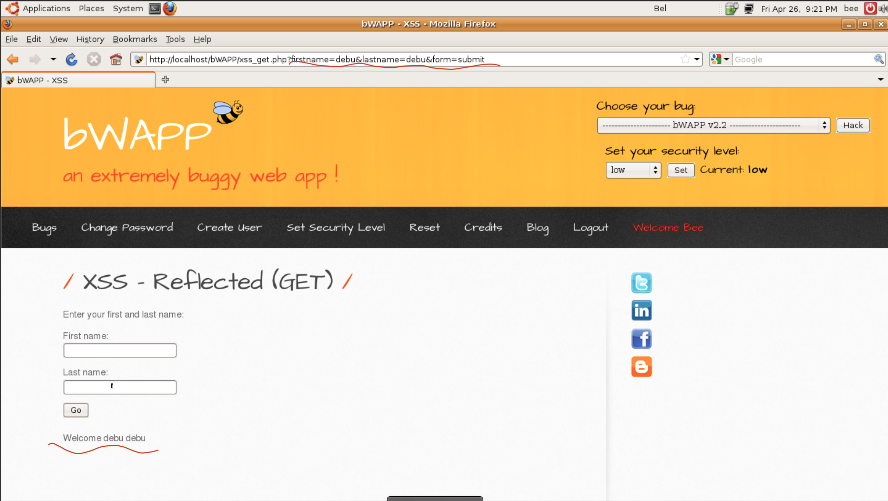
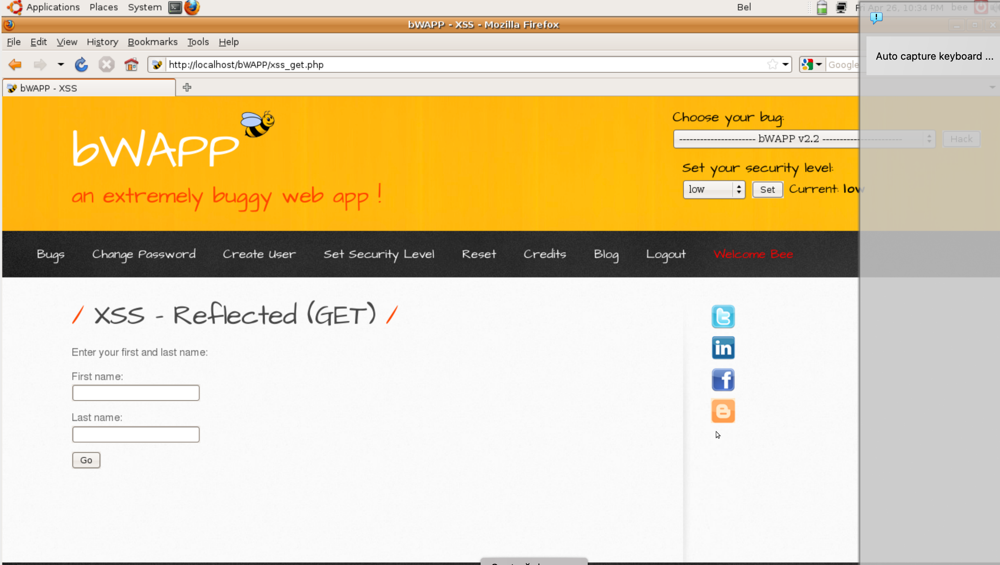
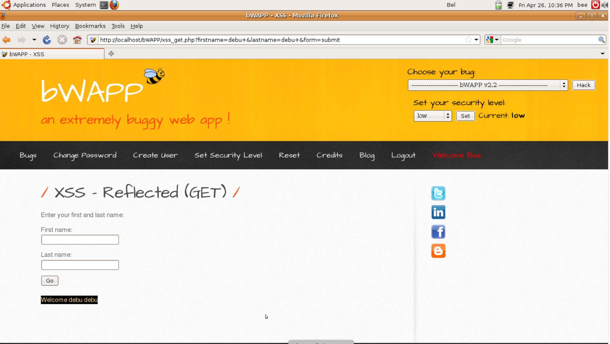
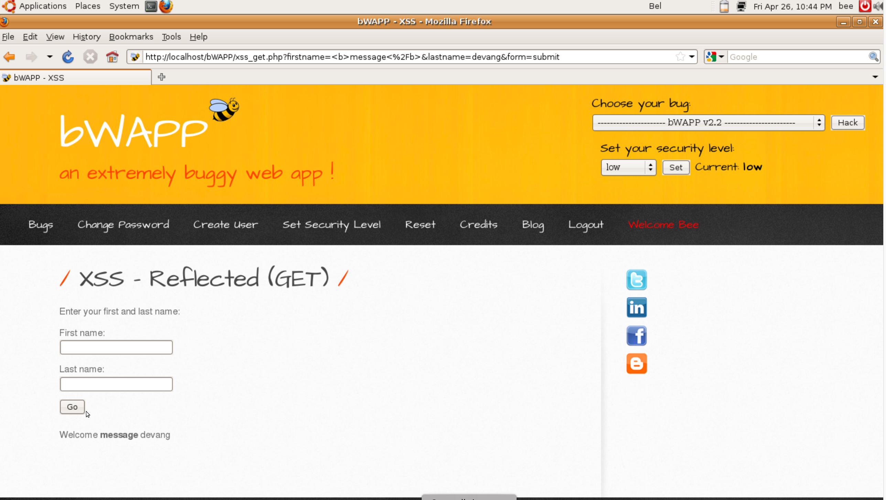
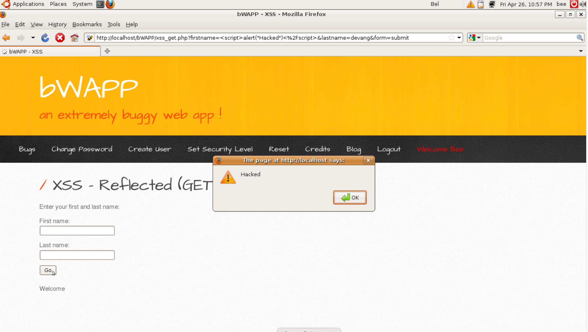
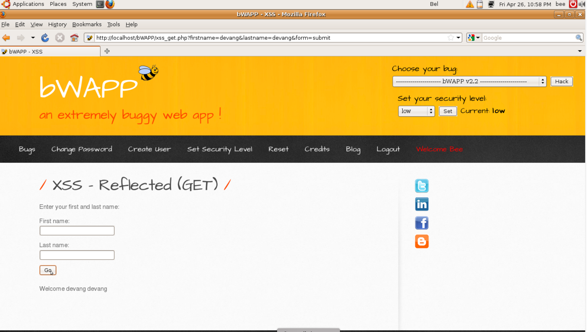
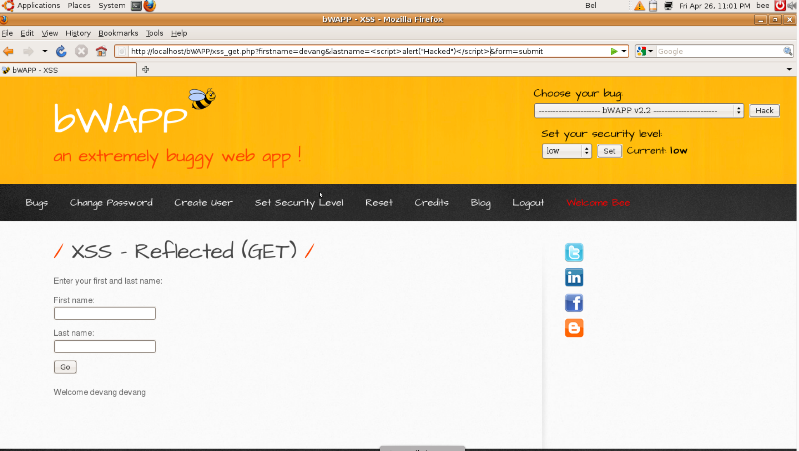
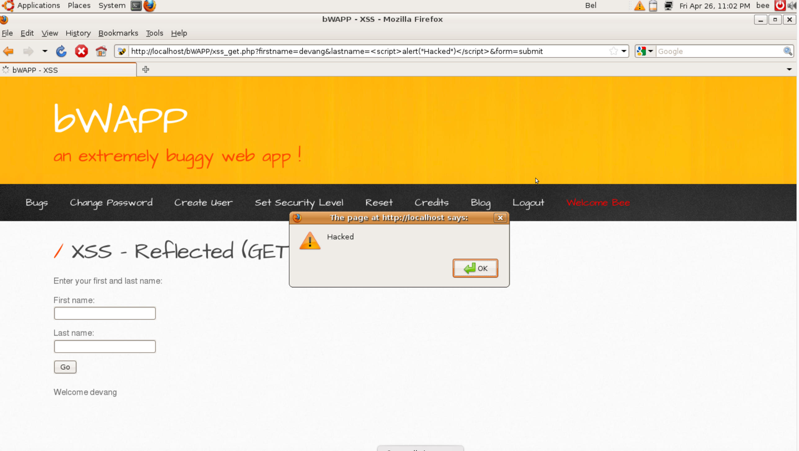
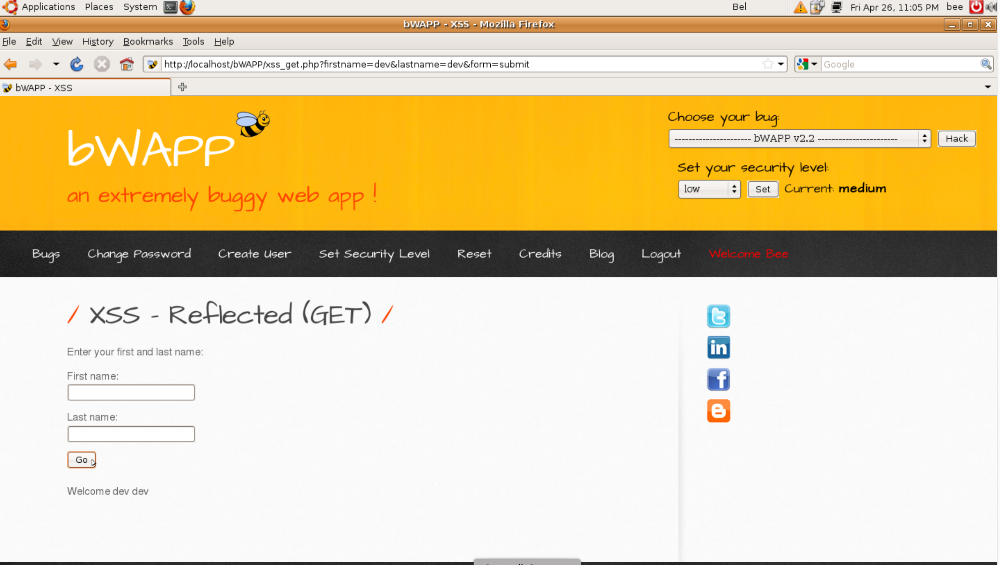
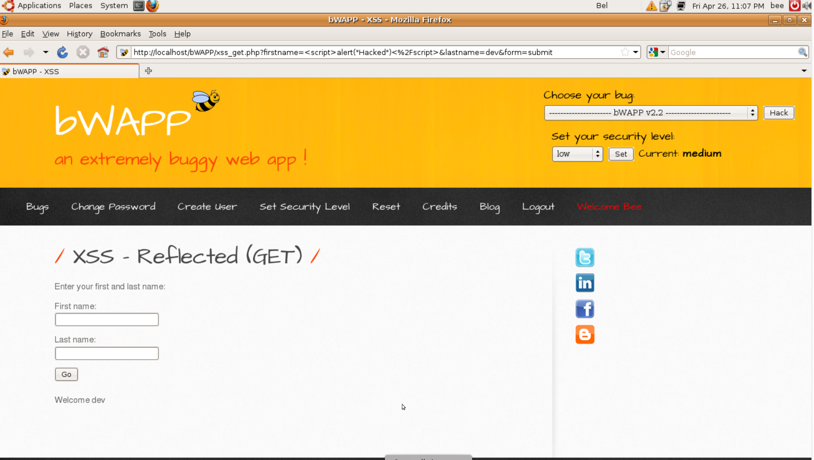

Introduction
Welcome to the Cross-Site Scripting (XSS) tutorial.
Step-by-Step Guide
Step 1: Access the XSS Vulnerability Page
Open your browser and navigate to http://localhost/bWAPP/xss_get.php.
Step 2: Submit Normal Input
Enter a simple first and last name (e.g., "debu" and "debu") to see how normal input is processed.
Click the "Go" button. The application processes the input and displays it back on the page.
Step 3: Observe URL Structure
Notice how the input values are reflected in the URL as query parameters.
Step 4: Inject HTML Tags
Modify the query parameters to include HTML tags. For example, change the first name to <b>message</b> to see if HTML tags are rendered.
The resulting page should display the injected HTML tags in the output, confirming that input is not properly sanitized.
Step 5: Inject JavaScript Code
Now, test injecting JavaScript code. Modify the URL to include <script>alert('Hacked')</script> in one of the query parameters.
The page should execute the JavaScript code and display an alert box.
Step 6: Confirm the Vulnerability
Finally, you can confirm the vulnerability by injecting various scripts or HTML codes to see how the application behaves. Here is another example:
The reflected XSS vulnerability allows an attacker to inject malicious scripts that the victim’s browser will execute, potentially leading to data theft, session hijacking, and other malicious activities.
Step 7: Setting Security Level to Medium
Change the security level to "medium" and repeat the process to see if the application behavior changes.
Enter normal input again to verify that basic functionality remains the same at a higher security level.
Step 8: Injecting JavaScript Code Again
Try injecting JavaScript code again with the higher security setting. Enter <script>alert('Hacked')</script> in the query parameters.
The page should still execute the injected JavaScript code and display an alert box, indicating that the medium security level still does not sanitize inputs properly.
Step 9: Further Validation of Vulnerability
Test by injecting another variant of the script to see if there are any changes in behavior or sanitization. Modify the URL to include <script>alert('Hacked')</script>.
The reflected XSS vulnerability persists, as evidenced by the alert box.